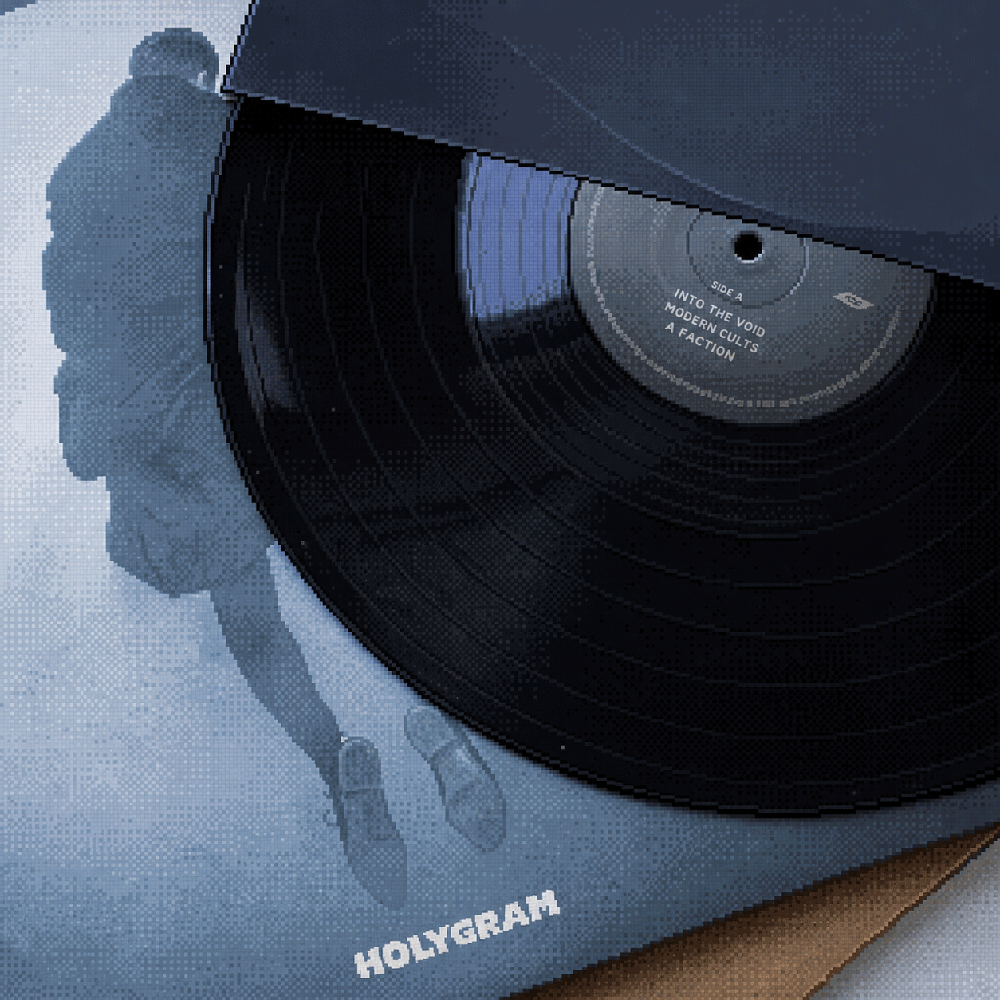

MUSIC
:: records & stages ::
Music has always been less about completeness than about the records, songs and nights that stay with me. This section brings together two parts of that history: the vinyl I have collected from artists I keep coming back to, and the concerts I have seen beyond The Sisters Of Mercy. It is deliberately personal rather than encyclopaedic — a trail through post-punk, alternative rock, electronic pop and whatever else found its way onto the turntable or a stage in front of me.